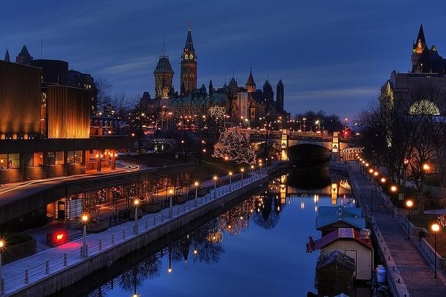

Welcome To Ottawa!
Bienvenue à Ottawa!

Founded on the soil of the Algonquin people is the city of Ottawa, the capital of Canada. It was originally named Bytown after Colonel John By in 1826. The name change occurred around the first week of January 1855. The origins of where 'Ottawa' originated from are unknown. However the most common theory is that it was derived from a First Nation tribe, Odawa. Now in modern day Ottawa, it's a very diverse city with many different types of people, whether it be of race, religion, belief, or lifestyle.
Sur la terre des peuples Algonquin est la ville d'Ottawa, la capital de Canada. Initialement, Ottawa a été nommé Bytown après Colonel John By en 1826. Pendant la première semaine de janvier 1855, le nom a été changé à Ottawa. Les origines du nom 'Ottawa' sont inconnues. Par contre, la théorie la plus commune est qu'il est dérivé d'une tribu Autochtone, Odawa. À ce jour, Ottawa est une ville très diverse avec beaucoup différent types de gens, soit c'est de race, réligion, croyance ou mode de vie.
